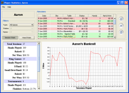
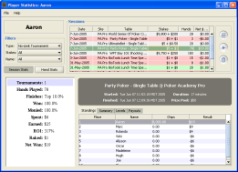
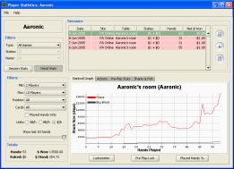
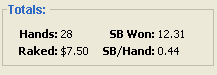

The Player Statistics panel presents detailed information on the selected player. Every hand ever played by that player is accessible from this window. The upper portion of the screen will list the sessions they have played. The filters on the upper-left will filter the session list by game type, stakes, and table name. Summary information of the selected sessions in the table is displayed in the bottom portion of the window. The bottom portion has two modes, Session Stats and Hand Stats.

Session stats shows information about the overall sessions. If a single session or tournament is selected, then results for that single session are displayed. If multiple sessions are selected, a bankroll graph is shown on the right, and session totals are given on the left.

The hand stats section displays summary information at the hand level. The hand stats displayed are based on the sessions selected in the upper table. The Hand Filters on the right let you filter the hands to match specific criteria such as your position, number of players, or your hole cards. Some basic totals are displayed below, and the main area to the right contains several tabs with detailed information:
